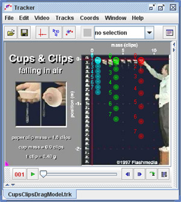

In this experiment students use theoretical model overlays to study the motion of falling cupcake cups that approach terminal velocity due to air resistance. The models are tracks that determine their positions from forces and initial conditions using a numerical solver rather than being marked with the mouse. Students define the force functions and parameters for the model and then observe how closely its behavior matches the real world. This introduces them to the process of dynamic modeling in an experimental and highly visual context. (The particle models also generate a full set of time-based data, but students do not analyze that data in this experiment.)
